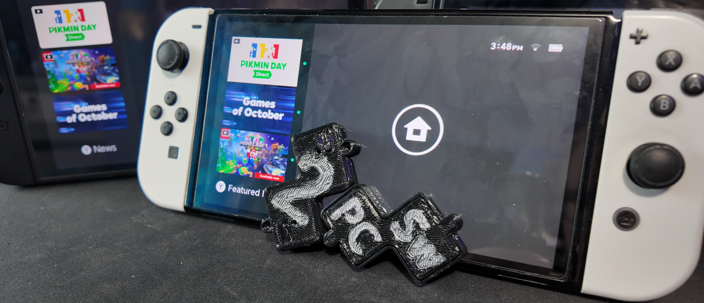
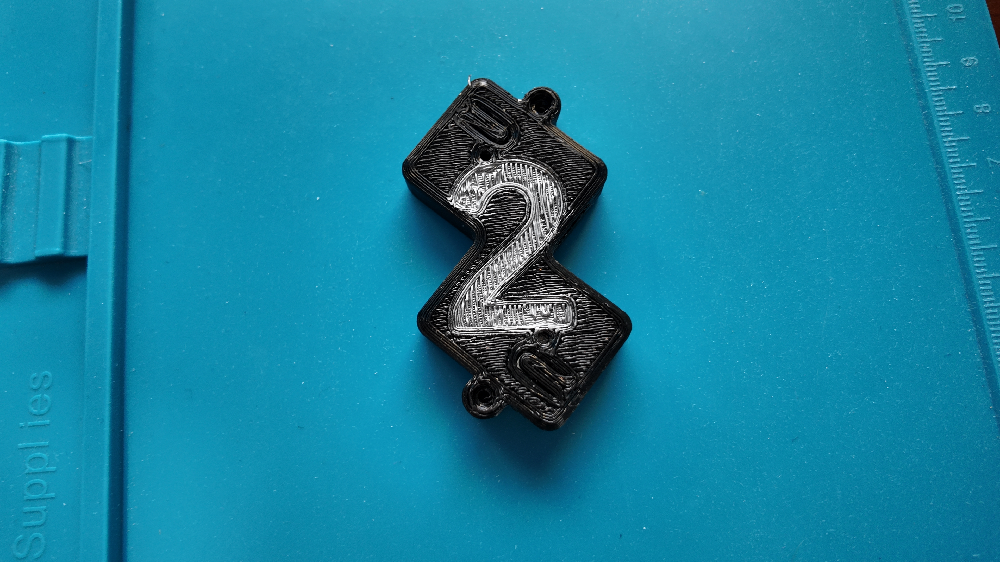
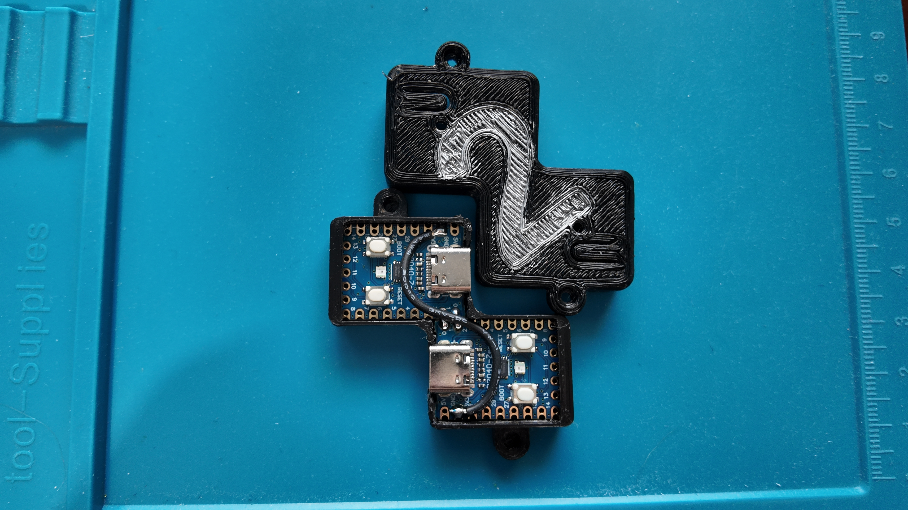
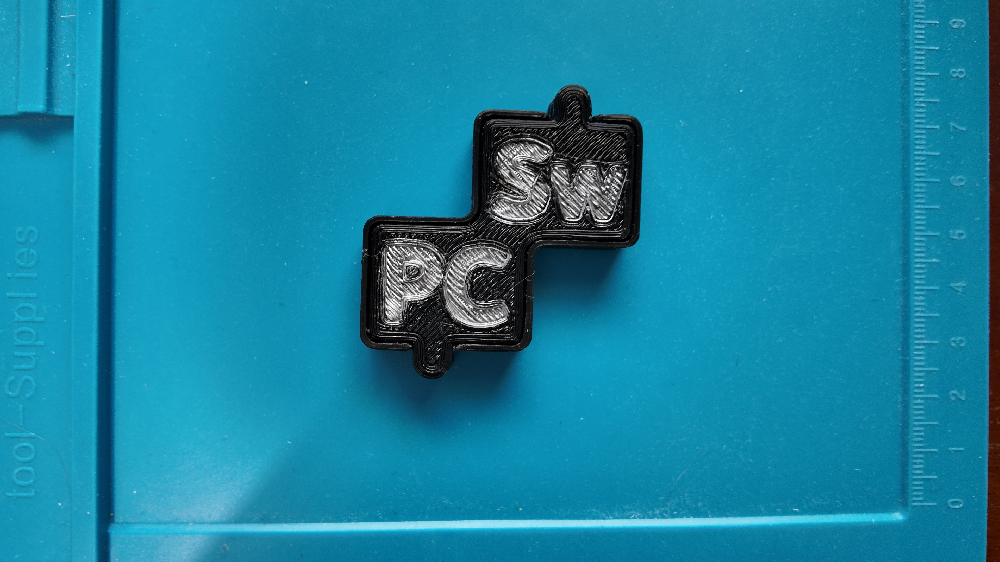

What is a SwiCC?
Ever been playing on your Nintendo Switch and struggle to beat a boss because the button mapping doesn't work for your hands? Ever been shiny hunting Pokemon on multiple consoles and wish you could control both with just one controller? Well, then the SwiCC might just be the tool for you!
The SwiCC, or Switch Controller Controller, is a device created by an online user who goes by the pseudonym KNfLrPn. The device functions as a bridge between any docked Nintendo Switch system(s) and a Computer. It uses a web-based software called "GLaMS". GLaMS stands for Gamepad Listen and Manipulate System. The SwiCC is designed as a bridge for controller data but GLaMS is what accepts the inputs from the computer and sends the data through the SwiCC(s).
Gallery
| SwiCC Top | SwiCC Open | SwiCC Bottom |
|---|---|---|
 |
 |
 |
What else can the SwiCC do?
The SwiCC is rich with features, here are a few highlights.
| Features/Manipulators | Description |
|---|---|
| Button Remapping | Allows you to remap the input controller to play games that wouldn't normally allow remapping. This is configurable via GLaMS. |
| Chat Commands | Directly connects to a Twitch Channel the reads the chat for specific text inputs then translates those to controller inputs. This is configurable via GLaMS. |
| Input Splitting | GLaMS is able to connect to up to 4 SwiCCs at any one time allowing for up to 4 Switches to be controlled simultaneously |
| Don't See What You're Looking For? | Go to the GLaMS page yourself and see all features! |